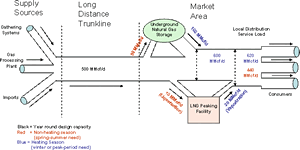

|
About U.S. Natural Gas Pipelines - Transporting Natural
Gas
based on data through 2007/2008 with selected updates |
|||||
|---|---|---|---|---|---|
|
A principal requirement of the natural gas transmission system is that it be capable of meeting the peak demand of its shippers who have contracts for firm service. To meet this requirement, the facilities developed by the natural gas transmission industry are a combination of transmission pipelines to bring the gas to the market areas and of underground natural gas storage sites and liquefied natural gas (LNG) peaking facilities located in the market areas. Sizes of Transmission Lines and Integrated Storage Sites The design of natural gas transmission pipelines and integrated storage sites represents a balance of the most efficient and economical mix of delivery techniques given the operational requirements facing the pipeline company, the number and types of transportation customers, and available access to supplies from production areas or from underground storage. Many natural gas pipeline systems are configured principally for the long-distance transmission of natural gas from production regions to market areas. These long-distance systems are often referred to as trunklines. At the other extreme are the grid systems, which generally operate in and serve major market areas. Many of the grid systems can be categorized as regional distribution systems. For the most part, they receive their supplies of natural gas from the major trunklines or directly from local production areas. The grid systems transport natural gas to local distribution companies and large-volume consumers. Design Criteria and Pipeline Size The design process includes the development of cost estimates for various possible combinations of pipe size, compression equipment, and inter-station distances to find the optimal combination that minimizes the transportation cost, given the desired flexibility and expandability goals. New trunklines typically are built with a larger diameter pipe than will be needed initially but with compression capacity limited to meeting current needs. Compressors can be added, in either new or existing stations, to increase capacity as growth in load occurs. A number of factors are involved in calculating how much natural gas a pipeline can carry. However, the most important factors are the diameter of the pipe and its operating pressure. Standard design codes require that all pipelines passing through populated areas reduce its maximum operating pressures for safety reasons. It had become common practice to maintain nominal pipe diameter but increase wall thickness where a line had to be derated for its surroundings (change in external stresses due to earth or traffic loads) in order to keep the working pressure rating more constant along the line. Increasing the pipe wall thickness or strength of the pipe will enable the pipe to withstand a greater pressure between operating and design pressure to adhere to safety requirements. Importance of Underground Storage Integration Underground storage is an essential component of an efficient and reliable interstate natural gas transmission and distribution network. The size and profile of the transmission system often depends in part on the availability of storage. Access to underground natural gas storage facilities, particularly those located in consuming areas, permits the mainline transmission pipeline operator to design the portion of its system located upstream of storage facilities to accommodate the level of total shipper firm (reserved) capacity commitments and the pipeline operator’s potential storage injection needs, commonly referred to as “baseload” requirements. The portion of the transmission system located downstream of the storage area (including LNG peaking facilities) is designed to accommodate the maximum peak-period requirements of shippers, local distribution companies, and consumers in the area. It is generally sized to reflect the total peak-day withdrawal (deliverability) level of all storage facilities linked to the system and estimated potential peak-period demand requirements. The daily deliverability from storage can also be factored into the design needs of a new pipeline or the expansion needs of an existing one. Some underground storage facilities are located in production areas at the beginning of the pipeline corridor and, in contrast to storage near consuming markets, can be used to store gas that may not be marketable at the time of production. For instance, natural gas produced in association with oil production is a function of oil market decisions, which may not coincide with natural gas demand or available pipeline capacity to transport the gas to end-use markets. Another example is the storage of natural gas produced from low-pressure wells, which may be injected into storage during the off-peak season and delivered, at high pressure, to the mainline during the peak season. These sites can be used by shippers to store short-term incremental supplies that exceed their reserve capacity on the pipeline system and the reverse when supplies fall below reserved capacity. Thus, the pipeline is relieved of additional demands for capacity brought on by temporary swings in the transportation demands of its customers. Overall Pipeline System Configuration The overall pipeline system configuration should result in a comparatively lower usage level (load factor) for downstream facilities in the summer season but a much higher, albeit shorter term, usage level during the peak-demand season. The upstream trunkline portion of the system, on the other hand, could operate at a more sustained high load factor throughout the year. (This design minimizing is oftentimes referred to as peak-shaving.) With underground natural gas storage and LNG peaking facilities configured into a natural gas pipeline system, especially one serving climate-sensitive markets such as the Midwest and Northeast, system operators can minimize the facilities and costs involved in building the “trunkline” portion of their system. Natural gas shippers, on the other hand, could avoid unnecessary costs incurred if they reserved additional firm capacity on an entire transmission system, rather than only a portion that would be used only on a few days during the winter season. During the nonheating season, for instance, when shippers do not need all the contracted capacity to meet their customer’s current consumption requirements, natural gas can be transported and injected into storage. By the beginning of the heating season (November 1), inventory levels are generally at their annual peak. Working gas, the portion of natural gas in storage sites available for withdrawal and delivery to markets, is then withdrawn during periods of peak demand. In addition, the pipeline company can avoid the need to expand transmission capacity from production areas by using existing, or establishing new storage facilities in market areas where there is a strong seasonal variation in demand and where the system may be subjected to operational imbalances.
|
Generalized Natural Gas Pipeline Capacity Design Schematic

click to enlarge
|
||||